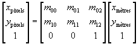

Interface LinearTransform
- All Superinterfaces:
MathTransform
A usually affine, or otherwise a projective transform, which convert coordinates using only linear equations.
A projective transform is capable of mapping an arbitrary quadrilateral into another arbitrary quadrilateral,
while preserving the straightness of lines. In the special case where the transform is affine, the parallelism
of lines in the source is preserved in the output.
Such a coordinate transformation can be represented by a matrix of arbitrary size, which is given by the
getMatrix() method. The relationship between matrix size and transform dimensions is as below:
- The number of columns in the matrix is equal to the number of source dimensions plus 1
- The number of rows in the matrix is equal to the number of target dimensions plus 1.
Affine transform
In most cases the transform in affine. For such transforms, the last matrix row contains only zero values except in the last column, which contains 1. For example, a conversion from projected coordinates (metres) to display coordinates (pixel) can be done as below:

Projective transform
If the last matrix row does not met the above constraints, then the transform is not affine. A projective transform can be used as a generalization of affine transforms. In such case the computation performed by SIS is similar toPerspectiveTransform
in Java Advanced Imaging.
For example, a square matrix of size 4×4 is used for transforming three-dimensional coordinates.
The transformed points (x',y',z') are computed as below:
where u, v, w and t are obtained by
Instantiation
The easiest way to instantiate aLinearTransform is to use the MathTransforms.linear(Matrix)
convenience method.- Since:
- 0.4
- See Also:
-
Method Summary
Modifier and TypeMethodDescriptionvoiddeltaTransform(double[] srcPts, int srcOff, double[] dstPts, int dstOff, int numPts) Transforms an array of relative distance vectors.Returns the coefficients of this linear transform as a matrix.inverse()Returns the inverse transform of this object, which shall also be linear.booleanReturnstrueif this transform is affine.Methods inherited from interface MathTransform
derivative, getSourceDimensions, getTargetDimensions, isIdentity, toWKT, transform, transform, transform, transform, transform
-
Method Details
-
isAffine
boolean isAffine()Returnstrueif this transform is affine. An affine transform preserves parallelism and has the same derivative at every locations.- Returns:
trueif this transform is affine.- Since:
- 0.6
- See Also:
-
getMatrix
Matrix getMatrix()Returns the coefficients of this linear transform as a matrix. Converting a coordinate with thisMathTransformis equivalent to multiplying the returned matrix by a vector containing the coordinate values with an additional 1 in the last row. SeeLinearTransformclass Javadoc for more details.- Returns:
- the coefficients of this linear transform as a matrix.
- See Also:
-
deltaTransform
void deltaTransform(double[] srcPts, int srcOff, double[] dstPts, int dstOff, int numPts) throws TransformException Transforms an array of relative distance vectors. Distance vectors are transformed without applying the translation components. The supplied array of distance values will contain packed values.Example
If the source dimension is 3, then the values will be packed in this order: (Δx₀,Δy₀,Δz₀, Δx₁,Δy₁,Δz₁ …).- Parameters:
srcPts- the array containing the source vectors.srcOff- the offset to the first vector to be transformed in the source array.dstPts- the array into which the transformed vectors are returned. Can be the same assrcPts.dstOff- the offset to the location of the first transformed vector that is stored in the destination array.numPts- the number of vector objects to be transformed.- Throws:
TransformException- if a vector cannot be transformed.- Since:
- 0.7
- See Also:
-
inverse
Returns the inverse transform of this object, which shall also be linear. The target of the inverse transform is the source of the original. The source of the inverse transform is the target of the original.- Specified by:
inversein interfaceMathTransform- Returns:
- the inverse transform.
- Throws:
NoninvertibleTransformException- if the transform cannot be inverted.- Since:
- 0.7
- See Also:
-